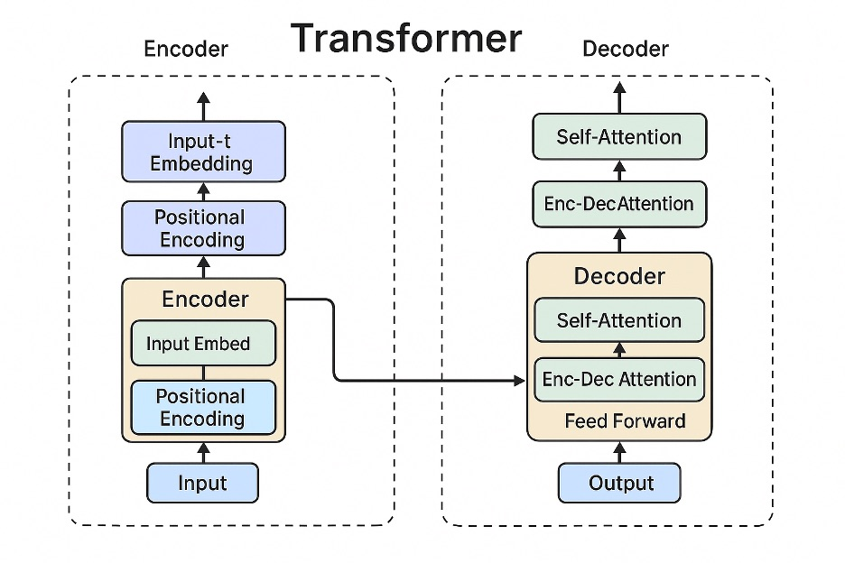
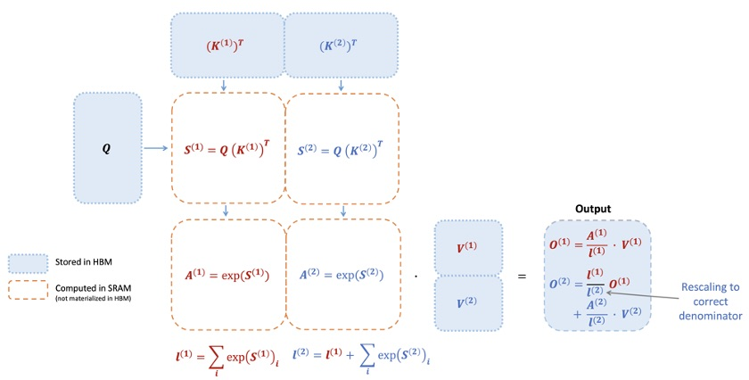
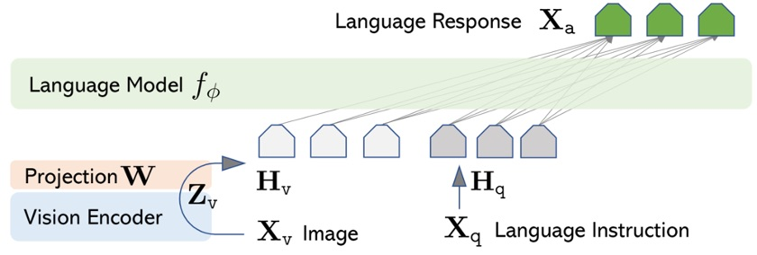

Week 8: 핵심 복습 및 최신 동향#
1. Transformer와 SSM 아키텍처#

기본적인 Transformer 인코더-디코더 구조의 개요. 왼쪽은 인코더 스택, 오른쪽은 디코더 스택을 보여준다. Transformer는 입력 문장을 토큰화한 후 멀티헤드 셀프 어텐션을 사용하여 토큰 간의 관계를 병렬로 계산하고, 맥락적 정보를 통합한다. 순차적으로 처리하는 RNN과 달리 모든 토큰을 동시에 고려할 수 있어, 입력 길이가 \(N\)일 때도 각 레이어에서 어텐션 연산의 빠른 훈련과 병렬화가 가능하다. Google의 2017년 “Attention Is All You Need” 논문에서 소개된 이 아키텍처는 BERT와 GPT 시리즈와 같은 대규모 언어 모델(LLM)의 기반이 되었다. Transformer의 순환 구조가 없다는 주요 장점은 병렬화를 가능하게 하여, 자연어 처리, 컴퓨터 비전, 강화 학습, 멀티모달 학습 등 다양한 분야에서 광범위하게 채택되게 했다.
한편, Transformer의 한계를 해결하기 위해 **상태 공간 모델(State Space Models, SSM)**을 기반으로 한 새로운 시퀀스 모델들이 제안되었다. 특히 ICLR 2022에서 발표된 S4 (Structured State Spaces for Sequence Modeling) 모델은 연속시간 상태 공간 방정식 \(x'(t) = Ax(t) + Bu(t), \; y(t) = Cx(t) + Du(t)\)의 해를 활용하여 긴 시퀀스를 효율적으로 처리한다. S4는 상태 행렬 \(A\)를 안정적인 대각화를 위한 특별한 구조로 매개변수화하고 Cauchy 커널을 사용하여 복잡한 지수 응답 함수를 단순화함으로써 시퀀스 길이 \(L\)에 대해 선형 시간 복잡도 \(O(N+L)\)를 달성한다. 결과적으로 S4는 16,000 길이 입력이 필요한 Path-X를 포함한 모든 Long Range Arena 벤치마크 작업에서 SOTA 성능을 달성했으며, 특히 이전 모델들이 해결하지 못했던 Path-X 문제를 88% 정확도로 해결한 첫 번째 모델이 되었다. 요약하면, SSM 기반 모델들은 Transformer 셀프 어텐션의 \(O(N^2)\) 비효율성을 피하면서 장기 의존성을 학습하는 장점을 보여준다. (NeurIPS 2022에서 S4를 단순화한 Diagonal SSM 등의 후속 변형들도 소개되었다.)
체크포인트
Transformer 모델에서 멀티헤드 셀프 어텐션 메커니즘이 어떤 역할을 하며, RNN과 비교했을 때 어떤 장점을 제공하는가?
S4와 같은 상태 공간 모델들이 긴 시퀀스를 어떻게 효율적으로 처리하며, 어떤 성과를 보여주었는가?
2. FlashAttention 최적화#
Transformer의 셀프 어텐션 연산은 중요한 단점이 있다: 시퀀스 길이 \(N\)에 대한 시간 및 메모리 복잡도가 \(O(N^2)\)라는 것이다. 이를 해결하기 위해 다양한 효율적 어텐션 기법들이 연구되었으며, FlashAttention은 2022년 Stanford의 HazyResearch 팀의 Tri Dao 등이 제안한 대표적인 최적화 알고리즘이다. FlashAttention은 어텐션 정확도를 잃지 않으면서 GPU 메모리 I/O 병목을 최적화하여 상당한 속도 향상을 달성한다. 구체적으로, 전체 \(N \times N\) 어텐션 점수를 한 번에 계산하는 대신, 쿼리/키/값 벡터를 작은 타일 단위로 처리하여 부분 합을 다룬다. 이 접근법은 GPU의 고대역폭 메모리(HBM)와 온칩 SRAM 간의 읽기/쓰기 연산 횟수를 극적으로 줄여, 중간 결과를 메모리에 반복적으로 쓰지 않고도 정확한 어텐션 출력을 가능하게 한다. 아래 그림에서 보이는 블록 단위 연산과 softmax 재조정을 통해 각 블록의 결과만 SRAM에 유지하고 최종 출력을 위해 결합하여 불필요한 메모리 접근을 제거한다. 결과적으로 FlashAttention은 표준 어텐션 대비 준이차 복잡도(거의 \(O(N)\)에 가까움)를 달성하여 실제 사용에서 2-4배의 벽시계 시간 가속을 보여주었다.

타일별로 셀프 어텐션 연산을 수행하는 FlashAttention의 개념도. 쿼리 \(Q\)와 키 \(K\)가 서브 행렬로 나뉘어 SRAM(빠른 캐시)에 로드된 후, 곱셈-softmax-값 \(V\) 곱셈 연산이 순차적으로 수행된다. 중간 점수 행렬을 HBM(전역 메모리)에 저장하지 않고 즉시 처리함으로써 메모리 I/O를 최소화하면서 정확한 어텐션 출력을 생성한다.
FlashAttention 구현의 성과는 인상적이다. 예를 들어, BERT-Large(시퀀스 길이 512) 모델 훈련을 약 15% 단축했으며, GPT-2(길이 1024)에 대해 3배 이상의 훈련 속도 향상을 보고했다. 또한 FlashAttention 기반 최적화 덕분에, 이전에는 거의 불가능했던 16K 토큰 길이 Path-X와 64K 토큰 Path-256 작업에서 무작위 추측 이상의 성능(각각 61.4%와 63.1% 정확도)을 처음으로 달성하여, 매우 긴 입력에 대해서도 의미 있는 추론이 가능함을 보여주었다. 요약하면, FlashAttention은 어텐션 결과의 정확도를 희생하지 않으면서 더 긴 맥락을 더 빠르게 처리하기 위해 메모리 사용량을 줄이는 혁신적인 방법이다. 현재 RedPajama, MPT, LLaMA, Falcon을 포함한 대부분의 오픈 LLM들이 이 기법을 채택하여 사실상 업계 표준이 되었으며, 최근 연구는 FlashAttention-2와 같은 추가 발전으로 Transformer 연산을 계속 개선하고 있다.
체크포인트
FlashAttention이 어텐션 연산 병목을 최적화하기 위해 어떤 아이디어를 사용했는가? (메모리 I/O 관점에서)
FlashAttention 구현에서 보고된 구체적인 성능 향상은 무엇이며, 이 기법이 표준 어텐션과 비교했을 때 어떤 장점을 가지는가?
3. 최신 PEFT 기법#
대규모 언어 모델을 다운스트림 작업에 맞게 파인튜닝할 때, 모든 매개변수를 업데이트하는 전통적인 접근법은 비용 비효율적이다. PEFT (Parameter-Efficient Fine-Tuning) 기법은 대규모 모델에서 매개변수의 작은 부분집합만 학습하여 모델을 효율적으로 튜닝하는 접근법이다. 예를 들어 추가 어댑터 레이어를 삽입하는 Adapter 방법과 프롬프트 벡터만 훈련하는 Prefix-Tuning/P-Tuning 기법이 있다. 특히 2021년 Microsoft 연구진이 발표한 LoRA (Low-Rank Adaptation) 방법은 모델의 가중치 행렬을 저순위 형태로 분해하고 소수의 순위 행렬만 학습하는 아이디어를 도입했다. LoRA는 모델의 기존 가중치를 고정하고 작은 순위 \(r\)의 보조 행렬 \(A, B\)를 병렬로 삽입하여 파인튜닝하므로, 학습해야 하는 매개변수 수를 극적으로 줄인다. 예를 들어, GPT-3 (175B) 모델의 전체 파인튜닝은 1750억 개의 매개변수 업데이트가 필요하지만, LoRA를 적용하면 학습량을 약 0.1% 이하로 줄일 수 있다. Hugging Face 실험에 따르면, 12억 매개변수 mt0-large 모델에 LoRA(\(r=8\))를 적용할 때 약 236만 개의 매개변수만 훈련하면 되며, 이는 전체의 단 **0.19%**에 불과하다. 그럼에도 불구하고 LoRA의 주요 장점은 모든 가중치를 튜닝하는 것과 거의 동등한 수준의 최종 성능을 유지한다는 것이다.
2023년에는 University of Washington과 Meta의 협력으로 QLoRA 기법이 등장하여 PEFT 효율성을 한 단계 더 높였다. QLoRA는 LoRA 파인튜닝을 적용하면서 모델을 4비트로 양자화하여 메모리 사용량을 최소화하며, 65억 규모의 최신 LLM들도 단일 GPU에서 48GB VRAM만으로 튜닝할 수 있음을 보여주었다. QLoRA 논문에 따르면, 이 방법으로 개발된 Guanaco 모델이 Vicuna 벤치마크에서 OpenAI의 ChatGPT 대비 **99.3%**의 성능을 달성했으며, 파인튜닝 과정이 단 하루(24시간) 만에 완료되었다. QLoRA의 핵심 혁신은 새로운 데이터 타입(NF4: NormalFloat4), 이중 양자화 기법, 페이지 메모리 최적화를 도입하여 4비트 양자화에도 불구하고 성능 저하를 방지하고, 단일 일반 GPU에서 3.3B, 6.5B 같은 대규모 모델의 쉬운 파인튜닝을 가능하게 한 것이다.
이러한 PEFT 기법을 활용함으로써 연구자와 개발자들은 저비용으로 대규모 언어 모델을 자신의 데이터에 맞게 최적화할 수 있다. Hugging Face는 실제로 peft 라이브러리를 통해 LoRA와 Prefix-Tuning을 포함한 다양한 PEFT 방법에 대한 통합 지원을 제공하여, 기존 모델의 일부만 훈련하는 실습을 쉽게 할 수 있게 한다. 아래 예제는 Hugging Face peft를 사용하여 T5 시리즈 모델을 LoRA로 래핑하고 훈련 가능한 매개변수 수를 확인하는 코드를 보여준다:
from transformers import AutoModelForSeq2SeqLM
from peft import LoraConfig, get_peft_model
# 기본 모델 로드
model = AutoModelForSeq2SeqLM.from_pretrained("bigscience/mt0-large")
# LoRA 설정: SEQ_2_SEQ_LM 작업, r=8, alpha=32, dropout=0.1
peft_config = LoraConfig(task_type="SEQ_2_SEQ_LM", inference_mode=False,
r=8, lora_alpha=32, lora_dropout=0.1)
# 모델에 LoRA 적용
model = get_peft_model(model, peft_config)
model.print_trainable_parameters()
# 출력 예시: "trainable params: 2359296 || all params: 1231940608 || trainable%: 0.1915"
체크포인트
LoRA 기법이 무엇이며, 전체 모델을 파인튜닝하는 것과 비교했을 때 어떤 장점을 가지는가?
QLoRA가 LoRA와 어떻게 다른지, 그리고 어떤 성과를 달성했는가? (예: 메모리 사용량 감소, 모델 성능 등)
4. 프롬프트 엔지니어링#
프롬프트 엔지니어링은 사전 훈련된 LLM에서 원하는 결과를 이끌어내기 위해 입력 프롬프트나 지시 내용을 신중하게 설계하는 기법이다. LLM의 능력이 향상됨에 따라 모델에 적절한 지시만으로도 다양한 작업을 수행할 수 있게 되었고, 이로 인해 여러 프롬프트 설계 전략이 등장했다. 가장 기본적인 접근법은 모델의 학습 방향을 안내하기 위해 예시를 제공하는 것이다. 예를 들어 프롬프트에 여러 예시 질문-답변 쌍을 포함하여 모델이 맥락을 학습하도록 안내하는 few-shot 프롬프트나, 예시 없이 작업 지시만으로 답변을 제공하는 zero-shot 프롬프트가 있다. 또한 복잡한 추론이 필요한 문제의 경우, 모델이 중간 추론 단계를 거치도록 안내하는 Chain-of-Thought (CoT) 프롬프트 기법이 개발되었다. 예를 들어 *”단계별로 생각해보자.”*와 같은 구문을 프롬프트에 추가하면 모델이 즉시 답변을 제공하는 대신 사고 과정을 단계별로 설명하게 되며, 이는 산술이나 상식 추론과 같은 작업에서 정확도를 크게 향상시키는 것으로 보고되었다. Wei et al. (2022)의 연구에 따르면, CoT 프롬프트는 모델이 충분히 클 때만 효과를 보였으며, GPT-3가 간단한 산술 문제에서 18% → 80%+ 정확도로 도약하는 사례가 있었다.
다른 많은 프롬프트 엔지니어링 기법들도 있다. 모델이 모호한 질문을 분해하고 추가 쿼리를 생성하도록 하는 ReAct 패턴 (Reason+Act 조합), 모델의 톤과 응답 형식을 제어하기 위해 시스템 역할 메시지를 사용하는 기법, 최종 답변이 특정 형식(예: JSON, 표)이 되도록 템플릿을 제공하는 방법 등이 있다. 이러한 전략들은 추가 모델 훈련 없이 출력 품질을 향상시킬 수 있다는 장점이 있어 LLM 활용 능력의 중요한 요소가 되었다. 특히 ChatGPT의 등장 이후, 모델에 역할을 부여하고 시스템 프롬프트를 통해 가이드라인을 제공하는 것이 표준화되었는데, 사용자 쿼리 전에 *”당신은 전문 분석가입니다…”*와 같은 맥락을 제공하여 모델의 톤을 전문적으로 만들거나, *”예시 형식에 따라 답변해주세요”*라고 지시하여 일관된 출력 형식을 얻는 방식이다. 현대 LLM들은 이러한 프롬프트에 민감하게 반응하도록 instruction-tuned되어 있어, 적절한 프롬프트 설계만으로도 원하는 작업을 수행할 가능성이 매우 높다.
체크포인트
Chain-of-Thought 프롬프트를 사용할 때 모델 응답에 어떤 변화가 일어나며, 어떤 유형의 문제에 효과적인가?
Few-shot과 Zero-shot 프롬프트의 차이점은 무엇이며, 각각 어떤 상황에서 활용해야 하는가?
5. LLM 평가 방법#
대규모 언어 모델(LLM)의 성능을 정확하게 평가하는 것은 매우 중요하면서도 도전적인 작업이다. 전통적으로 자연어 생성 품질 평가는 BLEU와 ROUGE와 같은 고정된 메트릭을 사용하여 수행되었지만, 이러한 메트릭들은 LLM이 생성하는 맥락적 적절성이나 창의성을 제대로 반영하지 못한다. 예를 들어, 번역에서 높은 BLEU 점수를 받더라도 실제 문장이 부자연스러울 수 있고, 반대로 창의적인 답변은 종종 미리 정해진 정답이 없어 점수를 매기기 어렵다. 따라서 최근 접근법들은 인간 평가자나 LLM 대 LLM 비교 대결을 자주 사용한다. 예를 들어, 하나의 문제에 대해 두 모델의 답변을 나란히 놓고 여러 사람이 어느 것이 더 나은지 투표하는 방식이다. Stanford의 HELM 벤치마크와 LMSYS의 Chatbot Arena는 이러한 쌍별 비교 방법을 사용하여 여러 모델을 순위를 매긴다. 하지만 인간 평가는 높은 시간과 비용 요구사항, 평가자 편차 등의 단점이 있다.
이를 보완하기 위해 모델이 다른 모델의 응답을 평가하도록 하는 시도도 활발하다. 예를 들어, OpenAI는 GPT-4를 사용하여 두 모델의 답변을 비교 평가하고 점수를 부여하는 연구를 수행했으며, 인간 평가와 높은 상관관계를 보고했다. Liu et al. (2023)의 G-Eval 연구도 GPT-4를 판단자로 사용한 평가를 제안했다. 이 방법에서는 GPT-4에게 *”응답의 정확성, 논리성, 간결성을 고려할 때 A와 B 중 어느 것이 우수한가?”*와 같은 체계적인 평가 가이드라인을 제공하여 Chain-of-Thought 방식으로 사고한 후 최종 평가 결과만 출력하도록 한다. 결과적으로 GPT-4 기반 평가 메트릭은 요약 작업에서 인간 평가와 0.514의 Spearman 상관관계를 달성하여 기존 자동 메트릭을 훨씬 초과하는 신뢰성을 보여주었다. 이러한 LLM-as-a-judge 접근법은 평가 자동화라는 장점이 있지만, 몇 가지 고려사항도 있다. 첫째, 모델 평가는 평가 모델 편향의 영향을 받을 수 있다. 예를 들어, GPT-4를 평가자로 사용하면 점수에 GPT-4가 선호하는 표현 스타일이 반영될 수 있다. 둘째, 두 응답 모두 평가 모델보다 우수한 영역의 지식을 요구할 때는 적절한 판단이 불가능할 수 있다. 이러한 한계를 완화하기 위해 Wang et al. (2023)은 단일 LLM 대신 다중 기준 평가 프레임워크나 평가를 위해 특별히 튜닝된 별도 모델(GPTScore, LionEvaluator 등)을 제안했다.
요약하면, LLM 평가는 인간 평가, 자동 메트릭, LLM 기반 평가의 조합을 사용하며, 각각 장단점이 있다. 실제로는 BLEU와 같은 자동 메트릭과 LLM 평가를 먼저 사용하여 후보 모델을 필터링한 후, 인간이 주요 사례만 최종 단계에서 검증한다. 한편, 여러 차원에 걸쳐 LLM 능력을 측정하는 대규모 벤치마크도 등장하고 있다. 예를 들어, MMLU (Massive Multi-Task Language Understanding)는 GPT 시리즈 모델의 지식 범위를 측정하기 위해 57개 분야의 지식 문제를 포함한 테스트이며, BIG-Bench는 204개의 다양한 능력 측정 작업으로 일반 지능을 평가한다. Stanford의 HELM은 편향과 유해성을 포괄하는 전체적 메트릭도 제안했다. LLM이 계속 발전함에 따라 평가 방법론은 중요한 연구 주제로 남을 것이다.
체크포인트
BLEU나 ROUGE와 같은 전통적인 자동 메트릭이 LLM 응답 품질을 완전히 나타내지 못하는 이유는 무엇인가?
GPT-4와 같은 대규모 언어 모델을 평가자로 사용할 때의 장점과 잠재적 위험은 무엇인가?
6. 멀티모달 모델#
인간은 텍스트뿐만 아니라 이미지, 오디오, 비디오 등 다양한 형태의 정보를 활용한다. 이러한 능력을 모방한 멀티모달 AI 모델은 여러 유형의 입력을 동시에 처리하고 다양한 형태의 출력을 생성할 수 있다. OpenAI의 GPT-4도 텍스트와 이미지를 동시에 받는 비전-언어 모델로 출시되었으며, Meta의 Flamingo와 DeepMind의 Perceiver-IO도 시각-언어 통합 아키텍처로 보고되었다(모두 2022년 출판). 2025년 최신 멀티모달 LLM을 살펴보면, 먼저 US MSR과 Columbia University에서 발표한 LLaVA 모델이 있다. LLaVA (Large Language and Vision Assistant)는 사전 훈련된 CLIP ViT-L/14 이미지 인코더와 Vicuna-13B 언어 모델을 결합하고, GPT-4가 생성한 시각적 지시 데이터로 추가 훈련하여 GPT-4의 멀티모달 이해 능력을 모방한 오픈 모델이다. LLaVA는 이미지 설명, Q&A 등을 대화 형태로 수행할 수 있으며, GPT-4와 비교 가능한 성능을 보여주었고, 이미지가 포함된 과학 테스트 문제를 다루는 Science QA 벤치마크에서 새로운 SOTA 정확도를 달성했다. 비슷한 시기에 Hong Kong PolyU 등에서 발표한 MiniGPT-4는 BLIP-2 모델의 Q-Former 모듈을 사용하여 이미지 특징을 추출하고 Vicuna-13B를 디코더로 활용하지만, 두 모델을 연결하는 하나의 투영 레이어만 파인튜닝하는 초경량 접근법으로 멀티모달 모델을 구현했다. MiniGPT-4는 고해상도 이미지의 상세한 설명과 OCR(광학 문자 인식)에서도 우수한 결과를 보여주어 Vicuna와 같은 오픈 LLM의 비전 확장 가능성을 입증했다.

LLaVA 멀티모달 아키텍처 개념도. 사전 훈련된 비전 인코더(CLIP)의 출력(\(X_v\))이 작은 투영 행렬 \(W\)를 통해 변환되어 Vicuna 언어 모델의 입력으로 공급된다. 이렇게 텍스트 LLM과 이미지 특징을 연결함으로써 모델은 시각적 정보에 대한 대화형 응답을 생성할 수 있다.
중국 Alibaba도 2025년에 멀티모달 초대규모 모델 Qwen-2.5 Omni를 발표했다. Qwen2.5-Omni-7B는 약 70억 개의 매개변수를 가진 통합 모델로 텍스트, 이미지, 오디오, 비디오를 종합적으로 이해하고 생성할 수 있다. 이 작은 모델의 성과는 주목할 만하다. 예를 들어, 요리 레시피 비디오를 이미지로 보여주면 재료를 인식하여 음성으로 단계별 요리 지시를 안내하거나, 사용자의 음성 질문을 듣고 관련 참조 이미지를 실시간으로 생성하여 보여주는 등 종단간 멀티모달 상호작용을 가능하게 한다. 기술적으로는 텍스트 생성과 음성 합성 모듈을 별도로 운영하여 텍스트와 음성 간 간섭을 줄이는 Thinker-Talker 이중 아키텍처와, 비디오 프레임과 오디오 스트림을 동기화하는 Time-aligned RoPE (TMRoPE) 위치 임베딩 등 여러 혁신을 적용했다. 결과적으로 7B 단일 모달 모델과 비교 가능한 인식 성능과 자연스럽고 빠른 음성 응답을 동시에 달성했다. 이 모델은 오픈소스로 공개되어 HuggingFace와 ModelScope에서 누구나 사용할 수 있으며, 모바일 기기와 엣지 환경에서도 원활하게 작동하도록 최적화되어 실용성을 크게 향상시켰다.
멀티모달 분야의 전문 모델로는 Alibaba Qwen 팀의 QVQ-Max가 있다. QVQ-Max는 2025년 3월에 발표된 시각적 추론에 특화된 72억 매개변수 모델이다. 이 모델의 특징은 이미지의 표면적 내용뿐만 아니라 논리적 맥락을 이해한다는 것이다. 예를 들어, 복잡한 건축 청사진을 입력으로 받으면 청사진의 세부 요소들(방과 창문 배치 등)을 식별하고 전문 지식과 비교하여 설계가 합리적인지 판단할 수 있다. 또한 여러 연속 이미지(비디오 클립)를 보고 현재 상황에서 다음에 일어날 일을 예측하거나, 사용자가 그린 대략적인 스케치를 받아 정교한 일러스트레이션으로 완성할 수도 있다. QVQ-Max는 Alibaba의 범용 모델 Qwen-2.5-Max와 함께 작동하도록 설계되었다. 예를 들어, Qwen-2.5-Max가 초기 질문에 텍스트 형태로 답변하면, QVQ-Max가 이미지 분석으로 추론을 보완하여 최종적으로 텍스트+이미지 증거를 제시한다. 이러한 시각적 추론 전문 모델의 등장은 멀티모달 LLM이 단순히 보는 것을 설명하는 것을 넘어서 보고 생각하는 AI로 발전하고 있음을 보여준다.
체크포인트
LLaVA와 MiniGPT-4와 같은 멀티모달 챗봇들이 구조적으로 시각적 입력을 텍스트 LLM과 어떻게 통합했는가? (어떤 추가 모듈과 훈련 데이터가 사용되었는가?)
멀티모달 모델에서 Thinker-Talker 아키텍처와 TMRoPE와 같은 기법들이 해결하려는 문제를 설명하라.
7. 긴 맥락 처리 기술#
기본적인 Transformer 모델은 사전에 정해진 최대 맥락 창 길이까지만 입력을 처리할 수 있다. GPT-3는 2048 토큰 제한이 있었고, GPT-4는 8192/32768 토큰 제한이 있었다. 하지만 실제 응용에서는 훨씬 긴 맥락이 필요한 경우가 많다. 예를 들어, 장편 소설 요약이나 수만 줄의 코드베이스에 대한 Q&A 등이다. 2025년 현재, 긴 맥락 문제를 해결하기 위한 여러 접근법이 개발되었으며, 일부는 이미 상용 시스템에 적용되었다.
첫째, 효율성을 위해 Transformer 셀프 어텐션 연산의 구조를 희소화하거나 수정하는 방법들이 있다. AllenAI의 Longformer (2020) 모델은 각 토큰 주변의 지역적 영역과 일부 전역 토큰에만 셀프 어텐션을 적용하는 희소 패턴을 사용하여 시퀀스 길이가 증가해도 계산 부하가 선형적으로 증가하도록 한다. Google 연구진의 BigBird (2020)도 유사한 아이디어로 지역 + 무작위 희소 어텐션을 도입하여 4096+ 토큰 입력 처리를 가능하게 했고, 긴 임상 기록 분류와 같은 작업에서 기존 BERT 대비 성능 향상을 보여주었다. Facebook의 Reformer와 Performer (2020)는 무작위 특징 맵이나 해싱을 사용한 근사 어텐션으로 \(O(N \log N)\) 또는 \(O(N)\) 복잡도를 달성했다. 이러한 효율적 Transformer 그룹 기법들은 입력 길이를 수천에서 수만 토큰으로 확장하면서 메모리 사용량을 크게 줄여, 긴 문서 요약과 같은 응용에서 활발히 사용되고 있다.
둘째, 순환 메모리 메커니즘을 활용하는 접근법들이 있다. 대표적으로 Google Brain의 Transformer-XL (2019)은 일정 길이의 세그먼트를 한 번에 처리하지만 각 세그먼트의 은닉 상태를 캐시하여 다음 세그먼트 처리에서 재사용한다. 이를 통해 모델이 RNN처럼 무한 길이 시퀀스를 연속적으로 읽을 수 있게 되었고, WikiText-103과 같은 언어 모델링 벤치마크에서 상당한 성능 향상을 보여주었다. 유사한 아이디어로, OpenAI의 GPT-3도 긴 맥락에서 이전 토큰들의 요약된 내부 표현을 유지함으로써 2048 토큰을 넘는 맥락을 간접적으로 처리했다. Anthropic의 Claude는 단일 세션 대화를 여러 조각으로 나누고 필요할 때 이전 내용의 요약을 첨부하는 방법을 사용하는 것으로 알려져 있다. 이러한 메모리 아키텍처는 구현이 상대적으로 간단하고 다양한 오픈소스 챗봇 프레임워크에 도입되었지만, 요약에 의존하기 때문에 정보 손실이 발생할 수 있다는 한계가 있다.
셋째, 검색 기반의 RAG (Retrieval-Augmented Generation) 접근법이 있다. 모델의 입력 맥락을 극도로 확장하는 대신, 이 방법은 문서를 외부 지식 베이스에 저장하고 쿼리 시점에 유사한 조각을 검색하여 모델에 제공한다. 예를 들어, 사용자가 매우 긴 보고서에 대해 질문할 때, 보고서를 미리 문단별로 나누어 벡터로 임베딩한 후, 질문과 임베딩 유사도가 높은 몇 개의 문단만 선택하여 LLM의 프롬프트에 넣어 답변을 생성한다. 이렇게 하면 모델 자체의 맥락 제한을 우회하면서 사실상 무제한 길이의 문서를 처리할 수 있다. 하지만 검색 품질이 답변 정확도를 결정하므로, 적절한 문단을 얼마나 잘 추출하느냐가 성능의 핵심이다. 이 RAG 접근법은 실제로 기업용 문서 Q&A 봇 등에서 널리 사용되고 있다. LangChain과 LlamaIndex 같은 오픈소스 도구들이 벡터 DB 기반 RAG 파이프라인의 쉬운 구축을 지원한다.
넷째, Transformer 구조 자체를 대체하거나 보완하려는 시도들이 있다. 2023년에 제안된 Microsoft의 **Retentive Network (RetNet)**는 어텐션을 완전히 제거하고 선형 게이트와 retention 메커니즘으로 시퀀스를 처리하여, 모든 토큰을 순차적으로 유지하는 새로운 구조를 도입했다. 간단히 말해, 병렬화를 가능하게 하면서도 RNN처럼 작동하도록 설계된 Transformer 대안이다. RetNet은 이론적으로 길이 \(N\)에 대해 선형 성능을 달성하며, 1억 단어보다 긴 문서에서도 안정적인 학습 결과를 보여주었다. 또 다른 방향은 위치 임베딩 측면의 개선이다. 예를 들어, LLaMA 모델에서 사용되는 RoPE (Rotary Position Embedding)는 훈련 중 최대 길이보다 긴 위치로의 외삽을 가능하게 하는 것으로 알려져 있으며, 이를 활용하여 LLaMA-2 7B의 맥락 길이를 100k 토큰 수준으로 확장하는 Position Interpolation 방법들이 보고되었다. 이러한 기법들은 모델이 훈련 중에 보지 못한 위치의 토큰을 처리할 수 있게 한다. 하지만 임의로 긴 맥락으로 추론을 수행할 때는 희석 현상 (초기 내용이 잊혀지는 문제)이 쉽게 발생할 수 있으므로, 최근 하이브리드 연구에서는 일정 간격으로 맥락 요약을 삽입하거나 계층적 맥락(예: 섹션별로 요약 토큰을 배치하는 기법)을 결합하는 방법들을 사용한다.
2025년 현재, 공식적으로 지원하는 맥락이 가장 긴 상용 LLM은 Google의 Gemini 2.5 Pro로, 100만 토큰에 달하는 거대한 맥락 창을 자랑한다. Anthropic의 Claude 2도 약 100k 토큰(장편 소설 한 권 분량)까지 지원하여 화제가 되었다. LLM의 맥락 제한이 이렇게 확장됨에 따라 긴 텍스트 입력을 처리하는 새로운 응용들도 등장하고 있다. 예를 들어, 한 스타트업은 수천 페이지의 전체 재무 보고서를 모델에 넣어 Q&A를 수행하는 AI 애널리스트 서비스를 도입했고, 다른 회사는 수년간의 소프트웨어 로그 데이터를 한 번에 분석하여 이상을 탐지하는 AI 모니터링 도구를 개발하고 있다. 긴 맥락 처리가 가능해짐에 따라, AI가 인간의 인지 범위를 넘어선 방대한 양의 정보를 요약하고 분석할 수 있는 시대가 열리고 있다.
체크포인트
Longformer나 BigBird에서 사용되는 희소 어텐션이 무엇이며, 긴 문서에 왜 유리한가?
검색 증강 생성(Retrieval-Augmented Generation, RAG) 접근법이 모델 맥락 제한을 어떻게 우회하며, 그 한계는 무엇인가?
현재 상용화된 LLM 중에서 지원 맥락이 가장 긴 모델은 어느 정도 길이를 처리할 수 있는가?
8. 최신 초대규모 및 전문 모델 동향 (2025)#
2023년부터 2025년까지 수많은 초대규모 AI 모델들이 발표되어 경쟁적으로 발전하고 있다. 여기서는 가장 주목받는 최신 모델들의 특징을 간략히 소개한다.
GPT-5 (OpenAI, 2025): GPT-5는 2025년 8월 OpenAI에서 발표한 GPT 시리즈의 최신 작품으로, 현재 존재하는 최고 수준의 지능형 언어 모델 중 하나다. GPT-5의 가장 큰 특징은 단일 통합 시스템 내에서 두 가지 다른 추론 모드를 가진 구조를 도입한 것이다. 즉, GPT-5는 기본적으로 빠른 응답을 생성하는 경량 모델과 어려운 문제에 대해 깊이 사고하는 딥 모델(GPT-5 “Thinking”)을 모두 포함한다. 대화 엔진은 질문의 난이도나 맥락에 따라 두 모델 중 적절한 모델로 자동 라우팅한다. 예를 들어, 간단한 질문은 경량 모델이 즉시 답변하지만, 사용자가 “이 문제에 대해 천천히 깊이 생각해보자”라고 명시적으로 말하거나 어려운 질문을 할 때는 내부적으로 더 많은 계산을 수행하는 Thinking 모드가 활성화된다. 이러한 이중 구조로 GPT-5는 응답 속도와 품질을 모두 달성한 것으로 평가받는다. GPT-5는 또한 이전 작품 대비 사실성과 안전성에서 상당한 개선을 달성했다. OpenAI 발표에 따르면, GPT-4에서 가끔 발생했던 환각 응답이 GPT-5에서는 절반 이하로 줄어들었고, 부정확한 정보를 마치 사실인 것처럼 진술하는 경우도 크게 감소했다. 특히 의료 도메인 쿼리에서 GPT-4 대비 우수한 성능을 보여주었으며, 자체 개발한 의료 상담 벤치마크 HealthBench에서 역대 최고 점수를 기록했다. 코딩 능력에서도 GPT-5는 GPT-4 대비 상당한 개선을 보여주었다. 전체 프론트엔드 웹 UI나 게임 구현과 같은 복잡한 요구사항을 단일 프롬프트로 받아 작동하는 코드와 시각적 결과를 생성할 수 있으며, GPT-4에서 흔히 필요했던 단계별 질문이나 디버깅 피드백 없이도 첫 번째 시도에서 원하는 결과를 생성한 사례들이 보고되었다. 또한 GPT-4에서는 어려웠던 일종의 디자인 감각도 있어서 생성된 웹 페이지의 레이아웃과 스타일을 더 정교하고 일관성 있게 만든다. 멀티모달 측면에서는 GPT-4의 이미지 입력 지원을 넘어서, GPT-5는 간단한 이미지 출력 (예: 개략도)이나 음성 응답을 연구하고 있는 것으로 알려져 있다. 이는 공식 출시 기능은 아니지만, 2025년 말 개발자 문서에서는 GPT-5가 제한적인 방식으로 이미지와 오디오 토큰을 생성하는 옵션을 언급하고 있다. 현재 GPT-5는 일반 ChatGPT 서비스의 기본 모델로 제공되며, ChatGPT Plus 구독자에게는 더 높은 성능을 보여주는 GPT-5 Pro 버전도 제공된다. GPT-5 Pro는 앞서 언급한 Thinking 모드를 더 자주 활용하고 응답에 출처 증거를 추가하는 향상된 모델이다. 복잡한 연구 보고서 요약이나 법률 상담에서 GPT-5 Pro는 GPT-4 대비 훨씬 길고 정교한 답변을 생성하며, 내부적으로 단계별 자체 검열과 사고 흐름 검사를 수행하기 때문에 실수를 덜 한다고 한다. 하지만 응답 속도는 초당 수백 토큰으로 GPT-4보다 약간 느리며, OpenAI는 유사한 질문에서 재사용하기 위해 중간 추론 결과를 저장하는 등의 최적화를 진행하고 있다.
Google Gemini 2.5 Pro (Google DeepMind, 2025): Gemini 2.5 Pro는 2025년 5월 Google I/O에서 Google DeepMind가 발표한 차세대 초대규모 모델이다. GPT-4를 멀티모달 통합과 추론 능력에서 능가하는 것을 목표로 개발되었으며, 출시 시점에 수많은 벤치마크에서 최고 성능을 달성하여 주요 화제가 되었다. Gemini 2.5 시리즈는 매년 숫자가 증가하는 버전 시스템으로 제공되며, “2.5 Pro”는 매개변수 규모가 수천억에 달하는 최고급 버전이다. (Pro 외에도 경량 Flash, 이미지 전문 Flash Image, 모바일 최적화 Flash-Lite 버전도 함께 발표되었다.) Gemini 2.5 Pro의 강점은 세 가지 주요 영역으로 요약할 수 있다: 향상된 추론 능력, 고급 코딩/도구 활용, 네이티브 멀티모달 처리다. 첫째, 추론/지식 측면에서 Gemini 2.5 Pro는 여러 도메인에 걸친 어려운 문제 해결에 뛰어나다. 특히 수학과 과학 분야에서 인간 전문가 수준의 문제 해결 능력을 보여주었는데, 예를 들어 미국 고등학교 수학 경시대회 AIME 2025에서 88.0% 정확도를 기록하여 GPT-4 시리즈(75.5%)를 크게 앞섰다. 또한 도구 사용 없이 진행되는 세계 지식 응용 테스트 Humanity’s Last Exam에서 21.6%를 기록하여 동일한 조건에서 GPT-4(14.3%)와 Claude 4(10.7%)를 여유롭게 이겼다. 이는 여전히 인간 평균 수준(대학 졸업생 수준 문제로 구성)에는 미치지 못하지만, 이전 세대 모델 대비 상당한 도약으로 평가받는다. 둘째, 코딩과 도구 활용 능력이 강화되었다. Gemini 2.5 Pro는 코드 해석과 생성에 특화되어 프롬프트만으로도 인터랙티브 웹 애플리케이션이나 게임 구현에 뛰어나다. 또한 내장된 외부 도구 통합 기능을 통해 대화 중 필요에 따라 모델이 직접 코드 실행이나 웹 검색 API 호출을 수행할 수 있다. OpenAI의 function calling과 유사한 이 기능 덕분에, 사용자가 “실시간 주식 가격을 알려줘”라고 요청하면 Gemini가 직접 웹 검색을 수행하고 결과를 응답에 반영할 수 있다. 마지막으로, Gemini 2.5 Pro는 네이티브 멀티모달 모델이다. 텍스트, 이미지, 오디오, 비디오의 네 가지 모달 입력을 모두 이해할 수 있으며, 텍스트와 음성으로 응답을 생성할 수 있다. 특히 음성 출력 기능이 뛰어나서 24개 언어를 일관된 음성으로 유창하게 말할 수 있으며, 실시간 대화에서 거의 지연이 없다. “흥분된 톤으로”와 같은 자연어 지시로 감정 표현과 톤도 제어할 수 있어, 마치 인간이 말하는 것처럼 풍부한 응답을 제공한다.
Gemini 2.5 Pro의 또 다른 혁신은 초장기 맥락 지원이다. 이 모델은 100만 토큰에 달하는 거대한 맥락 창을 제공하여 수천 페이지의 문서나 대규모 데이터셋을 한 번에 읽고 분석할 수 있다. 예를 들어, 수백만 단어의 전체 소설을 입력하고 “등장인물 관계를 요약해줘”라고 요청하면, 내부적으로 전체 소설을 이해하고 핵심 관계도를 도출한다. 이러한 장점을 활용하여 Gemini 2.5 Pro는 Google의 Bard 챗봇 서비스에 “대용량 파일 해석”과 같은 기능으로 적용되고 있다. 또한 가격 정책에서 GPT-4 32k 모델 대비 훨씬 경제적인 비용으로 긴 맥락 처리를 제공하여 경쟁 우위를 가진 것으로 평가받는다. 실제 벤치마크를 보면, 200k 맥락을 지원하는 Claude 4.1과 비교해도 Gemini 2.5 Pro가 긴 문서 Q&A에서 더 높은 정확도와 우수한 응답 생성 속도를 보여주었다.
요약하면, Google Gemini 2.5 Pro는 멀티모달, 초장기 맥락, 도구 활용 자율성 측면에서 현재 최고 수준으로 평가받는다. Google DeepMind는 이 모델을 자체 클라우드(Vertex AI)에 통합하여 기업용 API로 제공하고, 검색 엔진의 멀티모달 Q&A, 로봇 제어(Robotics Transformer) 등에 Gemini 기술을 적용하고 있다. 2025년 말에 Gemini 3.0 프리뷰도 발표되어 Google의 AI 경쟁이 계속될 것으로 예상된다.
Anthropic Claude 4.1 (Opus, 2025): Claude 4.1(개발명 Claude Opus 4.1)은 2025년 8월 Anthropic에서 발표한 최신 AI 어시스턴트 모델이다. Claude 시리즈는 “Constitutional AI” 원칙을 도입하여 안전하고 일관된 응답 생성에 특화된 것이 특징이며, Claude 4.1 버전은 특히 코딩 능력과 다단계 추론(에이전트) 능력에서 상당한 개선을 보여주었다. 발표 자료에 따르면, Claude Opus 4.1은 실제 소프트웨어 버그 수정 평가인 SWE-Bench(Verified)에서 74.5% 해결 정확도를 달성하여 OpenAI의 GPT-4 기반 코드 모델들을 능가했다. 또한 자율 에이전트 작업 평가인 TAU-Bench에서 최고 점수를 달성하여 복잡한 다단계 작업 수행에서 현재 모델들 중 가장 높은 신뢰성을 입증했다. (TAU-Bench는 도구 사용을 포함한 다단계 문제 해결 테스트이며, Claude 4.1은 확장 사고 모드를 통해 최대 64K 토큰을 활용하여 1위를 차지한 것으로 알려져 있다.) Claude 4.1은 맥락 길이에서도 업그레이드되었다. 이전 Claude 2가 100k 토큰까지 입력을 받을 수 있었던 반면, Claude 4.1 (Opus)은 단일 세션에서 200k+ 토큰을 유지할 수 있다. 이는 약 160권의 책 분량에 해당하며, Anthropic은 자체 테스트에서 Claude 4.1이 전체 미국 법전을 입력하고도 관련 조항을 찾아 답변할 수 있음을 보여주었다. 맥락이 길어질수록 모델은 앞부분 정보를 잊지 않고 활용해야 하는데, Claude 4.1은 대화 중에 필요한 부분을 재탐색하기 위해 스스로 요청하는 사고 확장 요청을 하는 등 메모리 관리 알고리즘을 강화했다.
또한 Claude 4.1은 특히 도구 사용 능력을 발전시켰다. Anthropic은 Claude 4.1이 “더 적극적으로 사고하고 필요할 때 도구를 호출한다”고 설명했는데, 예를 들어 코드를 수정할 때 주어진 함수가 어떻게 작동하는지 확신이 서지 않으면 내부적으로 가상 실행(“bash” 도구)이나 파일 편집 등의 자체 시뮬레이션을 수행한 후 결과를 바탕으로 다음 수정안을 생성한다. 이러한 적극적인 문제 해결 접근법은 인간 개발자들의 디버깅 과정과 유사하며, Claude 4.1이 이전 버전 대비 코드 수정에서 실수를 덜 하는 이유로 분석된다.
Anthropic은 Claude.ai 챗봇, Claude API, AWS Bedrock, Google Cloud Vertex AI 등의 플랫폼을 통해 Claude 4.1을 서비스한다. 가격 정책은 이전 Claude 2와 동일하게 유지되었는데, 예를 들어 Claude 4.1 API는 100만 입력 토큰당 약 \(15, 100만 출력 토큰당 \)50으로 GPT-4 32k 대비 경쟁력 있는 것으로 평가받는다. 안전성 측면에서 Claude 4.1은 Anthropic의 “constitutional” 원칙에 따라 유해한 발언이나 편향을 줄이기 위해 반복적으로 파인튜닝되었으며, constitutional 조항 세트는 업계와 사용자 피드백에 따라 지속적으로 업데이트된다고 한다. 요약하면, Claude 4.1은 “대화형 코파일럿”으로서 안정성, 긴 맥락, 도구 활용 측면에서 균형 잡힌 강점을 가진 모델이다.
Alibaba Qwen 2.5 Series (2025): 중국 Alibaba도 국내 및 오픈소스 생태계를 대상으로 한 대규모 모델 Qwen (通义千问) 시리즈를 적극적으로 개발하고 있다. 2024년 Qwen-7B/14B 발표에 이어 2025년에 차세대 버전인 Qwen-2.5를 출시했다. Qwen-2.5는 여러 변형이 있으며, 텍스트 전용 최고급 모델인 Qwen-2.5-Max가 2025년 1월에 발표되었다. 매개변수 수는 명확히 공개되지 않았지만 1000억 이상 규모로 추정되며, LMSYS Chatbot Arena 벤치마크에서 7위를 차지하여 공개 및 비공개 모델 모두에서 최고급 성능을 입증했다. 같은 달 Alibaba는 Qwen-2.5-Max를 상용 API로도 출시하여 클라우드 고객들에게 제공했으며, 중국 내 검색 및 전문 Q&A 서비스에서 응용 사례가 등장하고 있다.
3월에는 앞서 소개한 Qwen-2.5-Omni-7B 멀티모달 모델이 발표되었다. 작은 크기임에도 불구하고 텍스트, 이미지, 오디오, 비디오 처리를 통합하는 능력으로 주목을 받았으며, 특히 스마트폰에서도 효율적으로 작동하도록 엣지 기기 최적화에 중점을 두었다. 비슷한 시기에 Alibaba는 시각적 추론에 특화된 QVQ-Max도 발표했다. QVQ-Max는 앞서 언급한 Qwen-2.5-Max 모델을 백본으로 활용하는 72억 규모의 비전-언어 추론 모델로, Multi-Image VQA와 도표 문제 해결에서 우수한 성능을 보여준다. 예를 들어, 여러 과학 실험 이미지를 받으면 각 이미지를 관찰하여 공통 원리를 추론하거나 실험 결과를 예측하는 고급 시각적 이해를 보여준다. Alibaba는 이러한 모든 모델을 연구자들이 사용할 수 있도록 ModelScope 오픈소스 플랫폼에 공개했으며, 중국 내 여러 국내 스타트업들이 Qwen 시리즈를 기반으로 챗봇 및 생성형 AI 서비스를 출시하고 있다.
전체적으로 2025년은 OpenAI, Google, Anthropic, Alibaba와 같은 주요 플레이어들이 서로 다른 강점을 가진 대규모 모델을 선보이며 경쟁하는 패턴을 보여준다. OpenAI의 GPT-5가 종합적 지능 향상과 안정성을 추구하는 반면, Google의 Gemini 2.5 Pro는 멀티모달과 초장기 맥락에서 혁신을 보여주었고, Anthropic Claude 4.1은 안전성과 긴 맥락 추론에 집중하면서 자율 에이전트 가능성을 열었다. Alibaba Qwen 2.5 시리즈는 상대적으로 경량 구조의 여러 전문 모델(Qwen Omni, QVQ-Max 등)을 출시하여 오픈 생태계를 공략하고 있다. 이러한 모델들의 발전 동향을 꾸준히 추적하는 것은 팀 프로젝트에서 모델 선택과 활용에 큰 도움이 될 것이다.
체크포인트
GPT-5가 이전 세대와 비교하여 어떤 새로운 구조적 시도를 도입했는가? 이로 인한 장점은 무엇인가?
Gemini 2.5 Pro가 멀티모달 통합 모델로서 어떤 성능 강점을 가지는가? (예: 음성 처리, 1M 토큰 맥락 등)
Claude 4.1이 특히 높은 평가를 받는 영역은 무엇이며, 이는 어떤 기술적 개선 때문인가?
Qwen 2.5 시리즈 전략과 같이 여러 전문 모델을 보유하는 것의 장단점을 생각해보라.
9. 팀 프로젝트 참고 사례#
마지막으로 팀 프로젝트 실행에 영감을 줄 수 있는 여러 최신 연구 프로젝트나 오픈소스 프로젝트 사례들을 소개한다. 앞서 다룬 내용과 연결하여, PEFT 파인튜닝, 멀티모달 응용, 긴 맥락 활용, 에이전트 시스템 구축 네 가지 측면에서 참고할 만한 프로젝트들이다.
PEFT & 파인튜닝 오픈소스: 대규모 언어 모델을 자신의 데이터에 맞게 파인튜닝하고 싶은 팀들은 Hugging Face의 PEFT 라이브러리를 활용한 오픈소스 사례들을 참고하는 것이 좋다. Stanford의 Alpaca 프로젝트 (2023)는 OpenAI의 text-davinci-003에서 생성한 52,000개의 지시-응답 데이터로 Meta의 LLaMA-7B 모델을 지도 파인튜닝하여 ChatGPT와 유사한 성능을 가진 Alpaca-7B 모델을 발표했다. 이는 학계에서 저비용으로 대규모 언어 모델을 활용한 획기적인 사례로, 발표 후 큰 반향을 일으켰다. 이후 연구자 Eric J. Wang이 LoRA 기법을 사용하여 Alpaca를 재현한 Alpaca-LoRA 오픈소스 프로젝트를 발표했는데, 이 코드로 단일 RTX 4090 (24GB) GPU로도 하루 만에 Alpaca 수준의 모델을 훈련할 수 있음을 보여주었다. Alpaca-LoRA로 파인튜닝된 7B 모델은 Raspberry Pi 4 (4GB RAM)에서도 실행될 정도로 가벼워서 화제가 되었으며, LoRA가 얼마나 효율적인지 잘 보여주었다. Alpaca 이후에는 Berkeley/LMSYS 팀의 Vicuna처럼 공유 대화 데이터(ShareGPT 70k)로 LLaMA를 튜닝하여 GPT-4 평가 기준으로 90% 성능을 달성한 프로젝트나, 다양한 지시 데이터로 오픈 LLM을 개선한 GPT4All, BELLE 등이 연이어 등장했다. 팀 프로젝트에서 도메인 특화 Q&A 봇이나 전문 챗봇을 만들 때는 이러한 오픈 데이터 생성 → LoRA 튜닝 → 평가 파이프라인을 벤치마크하고 실행할 수 있다. 특히 Vicuna는 13억 단어 규모의 LLaMA 모델을 단 하루(~$300 비용)만에 대화형 형태로 변환한 성공 사례로, 모델 가중치의 미세한 변화만으로도 성능이 극적으로 향상될 수 있음을 보여주었다.
멀티모달 응용 오픈소스: 프로젝트에서 이미지나 오디오를 다루는 멀티모달 LLM 응용을 고려한다면, 앞서 언급한 LLaVA와 MiniGPT-4와 같은 오픈 프로젝트들을 분석해보자. 이러한 저장소들은 비전-언어 통합이 어떻게 구현되었는지에 대한 상세한 정보를 포함하고 있다. 예를 들어, LLaVA는 CLIP ViT 이미지 인코더 출력을 LLM 입력 임베딩과 연결하는 투영 레이어를 학습하고, GPT-4가 생성한 대량의 이미지 설명/질문 데이터를 사용하여 Instruction Tuning 과정을 거친다. MiniGPT-4는 BLIP-2의 Q-former를 사용하여 이미지 정보를 추출하여 Vicuna에 전달하지만, Vicuna의 어텐션 일부를 이미지용으로 열고 그 사이를 중재하는 하나의 Linear 레이어만 학습하는 초경량 방법을 선택했다. 이러한 구현 아이디어를 적용하면 자신의 사진 데이터와 간단한 캡션만으로도 작은 Vision-LLM을 파인튜닝할 수 있다. 실제로 오픈 멀티모달 코드를 적용한 커뮤니티 프로젝트들이 등장하고 있는데, DreamBooth(특정 인물 이미지 개인화)와 LLM을 결합하여 특정 사람의 얼굴을 인식하는 챗봇을 만들거나, 의료 X-ray 판독 LLM 데모 등이 있다. 또한 오픈소스 TTS (Text-to-Speech) 엔진(예: Coqui TTS)과 LLM을 결합하여 음성 대화 에이전트를 만드는 사례들도 있으므로, 필요하다면 이를 참고하여 음성 입력/출력 기능을 가진 시스템을 구축할 수 있다.
긴 맥락과 검색 활용: 프로젝트에서 도메인 자료가 방대하다면 고급 RAG 기법을 적용할 가치가 있다. 예를 들어, 내부 위키나 논문 데이터베이스를 다루는 팀의 경우, 모든 문서를 LLM에 완전히 입력할 수 없으므로 문서 임베딩 + 벡터 검색을 활용한 검색 증강 생성 파이프라인이 유용하다. LangChain은 이를 도와주는 도구로 널리 사용되며, 몇 줄의 코드만으로 FAISS와 같은 벡터 DB에 문서를 인덱싱하고 사용자 질문과 일치하는 상위 문서 조각을 찾아 LLM 프롬프트에 넣어 답변을 생성한다. LlamaIndex(구 GPT-Index)도 문서 컬렉션에 대한 유사한 인덱싱 및 쿼리 인터페이스를 제공한다. 이러한 라이브러리를 사용하면 짧은 개발 기간 내에 긴 기업 문서 Q&A 봇이나 논문 검색 요약 시스템을 구현할 수 있다. 하지만 RAG에서는 모델 응답이 검색된 문서의 정확성에 의존한다는 점을 주의해야 한다. 따라서 프로젝트 중 벡터 검색이 관련 없는 문서를 가져올 때는 모델이 이를 사실로 받아들이고 잘못된 답변을 줄 수 있다는 점을 염두에 두고, 재순위화 (예: SBERT 기반 재정렬)나 다단계 검색 (질문 → 키워드 추출 → 재검색)과 같은 보완책을 적용하는 것이 좋다.
또 다른 고려사항은 LLM의 대화 메모리 관리다. 긴 대화나 연속적인 작업 흐름에서 앞부분 맥락이 모델의 길이 제한을 초과할 수 있다. 이를 해결하기 위해 요약 메모리 기법을 프로젝트에 적용할 수 있다. LangChain의 ConversationBufferMemory 등이 이러한 기능을 제공하는데, 대화가 특정 토큰 임계값을 초과하면 이전 대화를 요약 형태로 압축하여 저장하고, 요약 + 최신 대화만 프롬프트에 넣어 응답을 생성한다. 이러한 압축 메모리 전략을 사용하면 모델이 긴 대화에서도 중요한 사항을 잊지 않고 유지할 수 있다. 예를 들어, 프로젝트에서 긴 회의 내용 요약 봇을 만든다면, LLM이 실시간 요약으로 대화 로그를 누적하여 맥락을 계속 유지하도록 구현할 것이다. OpenAI의 ChatGPT도 내부적으로 유사한 맥락 관리 아이디어를 활용하는 것으로 알려져 있다.
에이전트 시스템 구축: 자율 에이전트는 LLM이 지속적으로 목표를 설정하고 행동을 수행하여 인간의 개입 없이 작업을 완료하려고 시도하는 시스템이다. 2023년 초 GitHub에 발표되어 폭발적인 관심을 끈 Auto-GPT 프로젝트는 이러한 에이전트의 대표적인 Proof-of-Concept다. Auto-GPT는 사용자로부터 최종 목표 하나만 받으면 자율적으로 목표를 하위 작업으로 나누고, 중간 결과를 검토하며, 수정 계획을 수립한다. 예를 들어, “내 웹사이트 트래픽을 늘리는 방법을 조사해줘”라는 목표를 받으면, Auto-GPT는 먼저 시장 조사 → 경쟁사 사이트 분석 → 실행 계획 수립과 같은 하위 목표를 생성하고, 각 단계에서 인터넷 검색을 수행하거나 GPT 인스턴스를 생성하여 내용을 요약하며, 모든 단계를 완료하려고 시도한다. 이를 가능하게 하기 위해 Auto-GPT는 Google 검색, 웹 브라우징, 코드 실행, 파일 I/O와 같은 다양한 플러그인 명령어를 내장하고 있으며, LLM이 필요할 때 이러한 명령어를 호출하는 형태로 구현되어 있다. Auto-GPT의 등장은 “LLM이 지속적으로 추론하고 행동할 수 있다”는 가능성을 보여주었으며, 전 세계 개발자들이 코드를 포크하여 자신만의 전문 에이전트를 만드는 붐이 일어났다.
유사한 프로젝트로는 BabyAGI, GPT-Engineer 등이 있다. BabyAGI는 LLM을 사용하여 작업 일정을 생성하고 순차적으로 실행하는 간단한 프레임워크로 시작했지만, 나중에 메모리 DB와 다양한 도구 통합을 지원하며 점점 복잡해졌다. GPT-Engineer는 자연어로 작성된 요구사항을 받아 필요한 파일 구조와 함수 설계를 계획한 후 전체 코드를 자동 생성하는 실험적 프로젝트다. 예를 들어, “Python으로 마리오 게임을 만들어줘”라고 요청하면, GPT-Engineer는 게임에 필요한 모듈들(그래픽, 물리 엔진 등)을 나열하고, 일부 세부사항에 대해 사용자에게 질문한 후, 응답에 따라 모든 소스 파일을 완성한다. 물론 이러한 에이전트들의 성공률은 현재 그리 높지 않으며, 종종 이상한 행동을 하거나 막히는 경우가 많다. Auto-GPT 유형의 프로젝트들은 자연어 인터페이스의 한계(모호한 명령 해석, 장황한 출력 처리 등)로 인한 신뢰성 문제가 지적되고 있다. 그럼에도 불구하고 이러한 시도들은 능동적 LLM 활용의 가능성을 크게 확장했으며, GUI 실행, 다중 에이전트 협력, 장기 계획 등의 후속 연구로 이어지고 있다.
팀 프로젝트에서 이러한 에이전트 개념을 활용하고 싶다면, 먼저 Auto-GPT의 오픈소스 코드를 분석하는 것을 권장한다. 그 코드에는 LLM이 지속적으로 “생각-계획-비판-명령” 형식으로 출력을 구조화하는 프롬프트 템플릿과 JSON 형식으로 결정을 내리는 방법들이 포함되어 있어 유용하다. LangChain도 웹 검색 에이전트(SerpAPI 등)나 Python REPL 에이전트(LLMMath)와 같은 예제를 제공하므로 이를 결합할 수 있다. 예를 들어, LangChain의 initialize_agent 함수를 사용하여 OpenAI LLM을 여러 도구와 묶고 agent.run()을 호출하면, LLM이 도구 사용 형식에 따라 자동으로 함수를 호출하고 답변한다. 하지만 에이전트 프레임워크는 아직 신뢰성이 낮으므로, 팀 프로젝트에서는 완전 자율 에이전트보다는 보조 에이전트 (사용자 질문에 대해 백엔드에서 검색을 수행하여 LLM 답변을 보완)를 활용하는 것을 권장한다. 예를 들어, “문서 요약 봇”을 만든다면, 사용자가 요약하고 싶은 문서 제목에 대해 질문할 때 에이전트가 자동으로 내부 위키를 검색하여 내용을 가져오고, LLM이 요약하여 답변하는 방식이다. 이 접근법은 완전 자율 에이전트보다는 범용성이 낮지만 구현과 제어가 더 쉽고, 실용적 가치를 제공할 수 있다.
10. 실제 산업 현장 응용#
실제 산업 현장에서 LLM 기술의 응용이 급속히 증가하고 있다. 의료, 법률, 금융 분야의 대표적인 활용 사례들을 소개한다:
의료 분야: 환자 의료 기록과 의료 문서는 길고 복잡하여 요약과 검색을 위해 LLM이 도입되고 있다. Microsoft Nuance의 DAX Copilot은 진료실에서 의사-환자 대화를 녹음하고 GPT-4 기반 임상 요약을 자동으로 생성하여 대화 후 몇 초 내에 초안 의료 기록을 만드는 제품이다. 이는 의사들의 문서화 부담을 줄이며, 실제 프라이빗 프리뷰에서 의사들은 문서화 시간이 크게 단축되었고 환자 대화에 더 집중할 수 있었다고 보고했다. 또 다른 의료 응용은 이미지+텍스트 멀티모달 Q&A다. 예를 들어, Radiology VQA 시스템은 흉부 X-ray와 같은 의료 이미지를 LLM과 결합하여, 의사가 “이 환자의 X-ray에서 어떤 이상 소견이 있는가?”라고 질문할 때 이미지 분석 모델+LLM이 협력하여 적절한 소견을 제공한다. Google은 Med-PaLM2와 같은 의료 전문 LLM을 개발하여 의료 시험 문제 해결과 임상 가이드라인 Q&A에서 전문가 수준의 성능을 보여주었다. 또한 의사-환자 채팅 상담 내용을 자동으로 정리하고 전자의무기록(EHR)에 요약을 입력하는 파일럿 프로그램이 진행 중이다. 하지만 의료 분야는 오진 위험으로 인해 철저한 검증과 승인이 필요하며, AI가 생성한 요약은 의료 전문가의 검토를 거쳐야 한다.
법률 분야: 법률 업계는 판례/법령 요약, 계약서 검토, 변호사 어시스턴트 챗봇을 위해 LLM을 활용한다. 유명한 사례는 OpenAI GPT-4 기반의 Harvey AI로, Allen & Overy와 DLA Piper 같은 글로벌 로펌에서 계약 분석, 실사, 초안 작성에 채택되었다. Harvey는 사용자가 계약서를 업로드하고 질문할 때 관련 조항을 찾아 설명하거나 여러 판례를 비교하여 법률 연구를 지원한다. Orrick과 Fisher Phillips 같은 로펌에서 도입한 CoCounsel이라는 또 다른 GPT-4 기반 법률 AI는 고객 문의에 대한 법률 답변 초안 작성에 사용된다. 생산성이 향상되면서 세계 최대 로펌인 Dentons는 FleetAI라는 자체 전용 GPT-4 시스템까지 구축했다. 한편, 변호사들이 ChatGPT를 오용하여 가짜 판례를 인용하는 사건이 발생하기도 했으며, 업계는 AI가 제공하는 답변의 검증과 책임 문제를 신중히 고려하고 있다. 그럼에도 불구하고 LLM은 방대한 양의 판례와 문헌을 빠르게 찾고 요약하는 능력 덕분에 법률 연구와 문서 작성에 소요되는 시간을 극적으로 단축할 것으로 기대된다. LawGPT와 같은 실제 실험에서 GPT-4는 미국 변호사 시험(MBE)에서 상위 10% 점수를 달성하고 한국 변리사 시험 사례 문제를 상당한 수준으로 해결하여 법률 추론 성능도 발전하고 있음을 보여주었다. 법원 판결 요약과 가상 사건 Q&A 같은 공공 부문의 미래 응용도 검토되고 있다.
금융 분야: 금융은 대규모 문서 분석 및 보고서 요약, 투자 의사결정 지원, ESG 평가를 위해 LLM을 활용한다. 예를 들어, Morgan Stanley는 OpenAI와 협력하여 수십만 개의 내부 투자 연구 문서로부터 GPT-4 기반 지식 베이스 Q&A 어시스턴트를 만들었다. 금융 어드바이저가 질문하면 GPT-4가 10만 개 이상의 내부 문서에서 필요한 부분을 찾아 답변을 제공하고 후속 질문을 위한 맥락을 유지한다. 이로 인해 어드바이저들이 자료 검색에 소요하는 시간이 크게 단축되었고, AI의 빠른 요약 덕분에 고객 서비스 품질이 향상되었다. Morgan Stanley는 또한 Debrief 도구를 도입하여 Whisper로 회의 오디오를 전사하고 GPT-4로 요약하여 고객 회의 후 몇 분 내에 핵심 포인트 정리와 후속 행동 제안을 자동화한다. 한편, LLM은 ESG(환경, 사회, 지배구조) 투자 영역에서도 사용되며, 방대한 양의 지속가능성 보고서와 뉴스 데이터를 분석하여 기업의 ESG 리스크를 평가한다. AWS와 Databricks가 출시한 ESG 분석 솔루션은 기업의 연간 **ESG 보고서(PDF)**에서 핵심 정책 키워드를 추출하고 실시간 뉴스의 감정 분석과 대조하여 보고서와 실제 행동 간의 차이를 탐지한다. 이를 통해 “A사의 탄소 중립 선언은 긍정적으로 작성되었지만 뉴스 보도에서는 약하다”와 같은 객관적 점수를 투자자에게 제공할 수 있다. 오픈소스 FinGPT도 등장하여 인터넷의 금융 뉴스를 크롤링하여 주가 영향 예측과 포트폴리오 주식의 요약 보고서 생성을 시도한다. 금융에서는 데이터 보안이 중요하므로 LLM API 사용보다는 자체 모델 구축에 대한 수요가 높다. 이에 따라 Bloomberg는 자체 훈련한 BloombergGPT를 출시했으며, 국내 금융기관들도 내부 업무를 위해 오픈소스 LLM을 파인튜닝하는 사례가 증가하고 있다. 자동화된 거래 보고서 작성과 애널리스트 지원 챗봇이 대표적인 예시다. 하지만 금융 언어의 특성상 모델 정확도와 소소한 오류에 대한 허용도가 민감한 문제이므로, 신뢰성을 구축하기 위해 초기 단계에서는 인간 검토와 함께 도입되고 있다.
체크포인트
Alpaca-LoRA 프로젝트가 저비용으로 대규모 언어 모델 파인튜닝을 어떻게 실현했는가? 실제 활용 시 따라야 할 절차는 무엇인가?
LLaVA나 MiniGPT-4를 참고하여 새로운 멀티모달 LLM 응용을 만든다면, 어떤 모달 조합과 데이터를 사용할지 설명하라.
대규모 내부 문서가 있는 상황에서 RAG 기반 챗봇을 구축하려면 어떤 구성 요소가 필요하며, 각 단계에서 주의해야 할 점은 무엇인가?
Auto-GPT 스타일의 자율 에이전트들이 가진 잠재적 문제는 무엇인가? 팀 프로젝트 맥락에서 이러한 에이전트를 도입할 때 안전성/신뢰성을 보장하기 위해 취할 수 있는 조치는 무엇인가?
참고자료#
What is LoRA (Low-Rank Adaption)? | IBM. https://www.ibm.com/think/topics/lora
Brief Review — QLoRA: Efficient Finetuning of Quantized LLMs | by Sik-Ho Tsang | Medium. https://sh-tsang.medium.com/brief-review-qlora-efficient-finetuning-of-quantized-llms-6f20a7255701
Vicuna: An Open-Source Chatbot Impressing GPT-4 with 90% ChatGPT Quality | LMSYS Org. https://lmsys.org/blog/2023-03-30-vicuna/
LLaVA. https://llava-vl.github.io/
Longformer in Deep Learning - GeeksforGeeks. https://www.geeksforgeeks.org/deep-learning/longformer/
[2004.05150] Longformer: The Long-Document Transformer - arXiv. https://arxiv.org/abs/2004.05150
r/singularity - Yet another model: Vicuna - An Open-Source Chatbot. https://www.reddit.com/r/singularity/comments/12715w0/yet_another_model_vicuna_an_opensource_chatbot/
Open-source AI models, e.g. Vicuna close to ChatGPT. https://discourse.julialang.org/t/open-source-ai-models-e-g-vicuna-close-to-chatgpt-julia-applications/97115
Vicuna - 90% of ChatGPT quality by using a new dataset? - YouTube. https://www.youtube.com/watch?v=4VByC2NpV30
Microsoft DAX Copilot automated doctor tool artificial intelligence healthcare. Healthcare Dive. https://www.healthcaredive.com/news/dax-copilot-nuance-automated-doctor-tool-artificial-intelligence-healthcare/694818/
Multimodal Large Language Models in Medical Imaging: answering, and interactive diagnostic support. PMC. https://pmc.ncbi.nlm.nih.gov/articles/PMC12479233/
The Times They Are A-Changin’: The Rise of Generative AI in the Legal Profession. Federal Bar Association. https://www.fedbar.org/blog/the-times-they-are-a-changin-the-rise-of-generative-ai-in-the-legal-profession/
Inside Legal Industry’s AI Arms Race. National Law Review. https://natlawreview.com/article/inside-legal-industrys-ai-arms-race
Morgan Stanley. OpenAI. https://openai.com/index/morgan-stanley/
Using Large Language Models for ESG Sentiment Analysis using Databricks on AWS. AWS Blog. https://aws.amazon.com/blogs/hpc/using-large-language-models-for-esg-sentiment-analysis-using-databricks-on-aws/
FinGPT. GitHub. AI4Finance-Foundation/FinGPT
FinGPT: Large Language Models for Financial Applications. OpenReview. https://openreview.net/forum?id=5BqWC1Fz8F